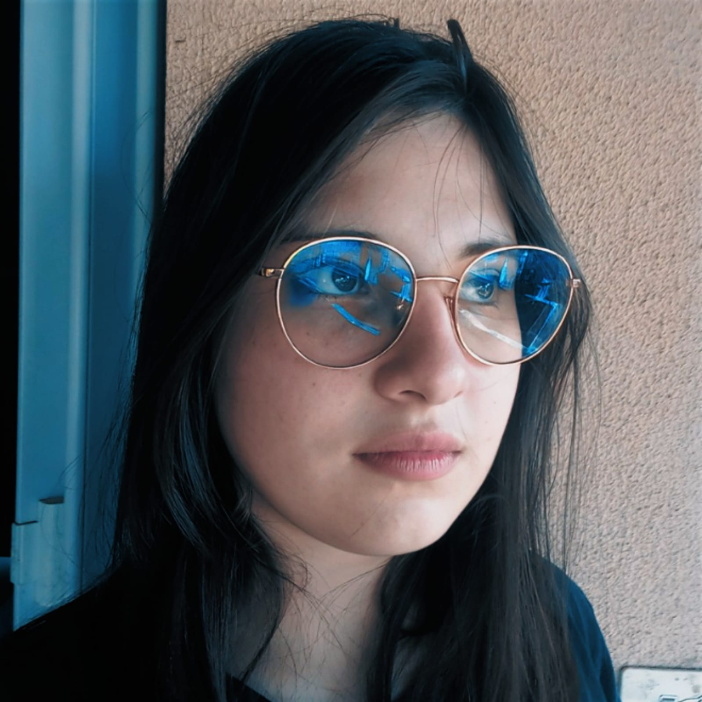
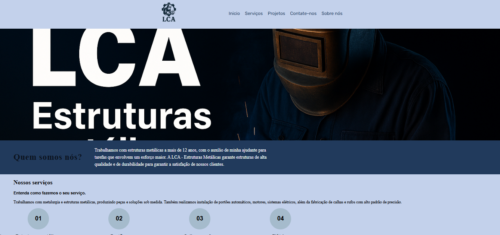
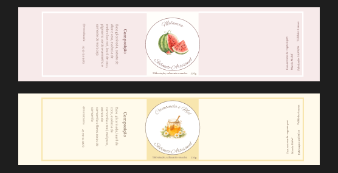

Sou uma profissional que transita entre lógica e criatividade com naturalidade. Como desenvolvedora Full-Stack, construo aplicações completas, do back-end robusto ao front-end intuitivo. Paralelamente, como designer gráfico, transformo ideias em identidades visuais impactantes, combinando estética, funcionalidade e experiência do usuário. Acredito que código e design não são áreas separadas, mas partes complementares de uma mesma solução. Por isso, meu trabalho une tecnologia e visual de forma estratégica, criando projetos que não apenas funcionam bem, mas também comunicam e encantam.

Desenvolvi um website institucional para a empresa de metalúrgica dos meus pais, com o objetivo de fortalecer a presença digital do negócio e apresentar seus serviços de forma clara, moderna e confiável. O projeto foi pensado para transmitir profissionalismo e destacar a experiência da empresa no setor metalúrgico, valorizando tanto a qualidade técnica quanto a tradição familiar.

Desenvolvi uma série de projetos de design para sabonetes artesanais, explorando identidade visual, estética sensorial e apresentação de produto. O objetivo foi criar peças que unissem funcionalidade, apelo visual e coerência conceitual, valorizando o caráter artesanal e a proposta de bem-estar associada ao produto.
Meu primeiro evento de tecnologia foi em 2025 quando fomos visitar um evento de tecnologia na faculade da PUCPR em Toledo, Paraná.
2025